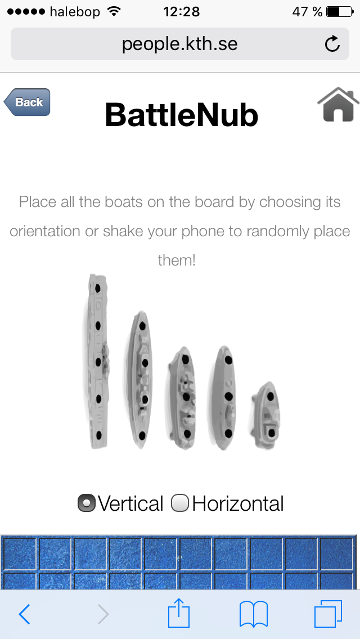
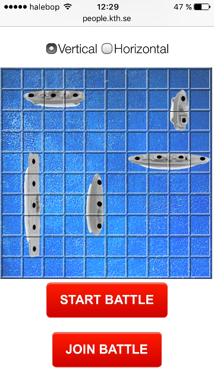
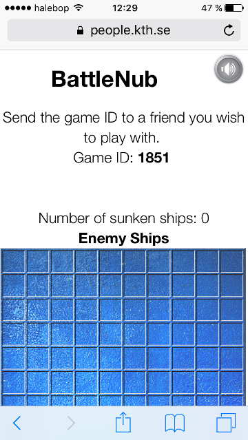
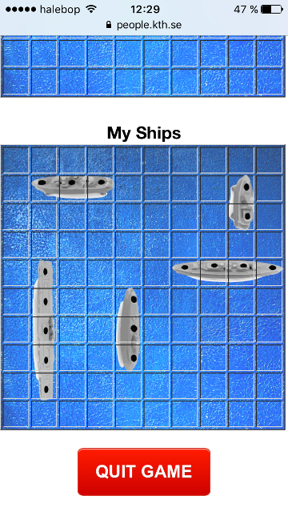

BattleNub
A web based multiplayer Battleship game.
How does it work?
Battlenub is an online multiplayer battleship game that can be played in modern web browsers. The game is built with the PubNub API, which allows for submitting data between devices. To play the game simply send your randomly generated game ID to a friend and start battling against each other!
The start screen of the application.

Place your ships on the battlefield!

Once the ships are placed, you are ready to start.

Simply send your friend the ID of the game session and get ready to start!

Scroll between your ships and the enemy's.
Once your friend recieves the ID, they can simply type it in to join the fun!